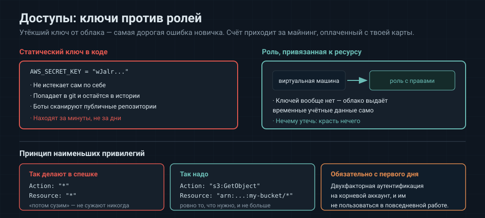

Аналогия: пропускная система в здании. У каждого сотрудника карта, открывающая ровно те двери, которые нужны для работы, а не все сразу.
IAM отвечает на три вопроса: кто (пользователь, сервисный аккаунт), что может (набор разрешений) и с чем (конкретный ресурс).
Практические правила, которые проверяют на собеседовании:
Корневым аккаунтом не пользуются. Он нужен для первичной настройки и оплаты. Для работы создают отдельных пользователей с ограниченными правами, а на корневой ставят двухфакторную аутентификацию в первый же день.
Принцип наименьших привилегий. Права выдают ровно те, что нужны для задачи. Соблазн написать «разрешить всё на всём» и «потом сузить» велик — и сужают почти никогда.
Роли вместо ключей. Это самая важная мысль раздела. Статический ключ доступа — строка, которая не истекает и которую легко потерять: она попадает в код, в историю git, в лог пайплайна. Публичные репозитории сканируются ботами непрерывно, и утёкший ключ находят за минуты — после чего на аккаунте появляются машины для майнинга, оплаченные с твоей карты.
Альтернатива — роль, привязанная к ресурсу: машине или контейнеру назначается роль, и облако само выдаёт ей временные учётные данные. Ключей не существует физически, красть нечего.
# было: ключ в переменных окружения
AWS_ACCESS_KEY_ID: AKIA...
AWS_SECRET_ACCESS_KEY: wJalr...
# стало: роль на машине, ключей нет вовсе
Если статический ключ всё же нужен (например, для локальной разработки) — он живёт в переменных CI/CD с флагами Masked и Protected (3.2 CI-CD, §11) и регулярно меняется.